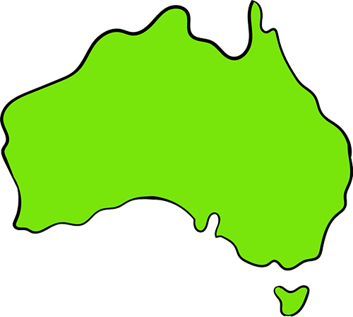
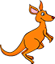
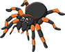

DYRELIVET I AUSTRALIA

Flagget er basert på den britiske Blue Ensign med Union Jack i hjørnet. Den store stjernen og Sydkorset er nasjonale symboler som gjør dette til Australias flagg. Stjernen er The Commonwealth Star, opprinelig med seks tagger som representerte de seks første delstatene. Den sjuende kom til i 1908 og representerer Papua og andre territorier. (SNL 2022)

